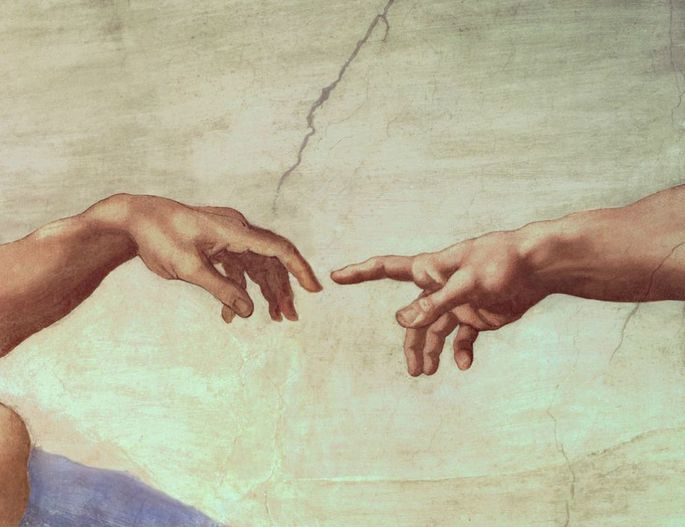

01 — O PROJETO
Quanto vale
uma obra de arte?
Ao longo da história, inúmeros artistas transformaram sentimentos, ideias e acontecimentos em obras capazes de atravessar gerações.
Entretanto, reconhecimento e valorização nem sempre acompanharam aqueles responsáveis por essas criações.

02 — DESAFIO
E você,
conhece esses artistas?
Responda a seis perguntas sobre alguns dos maiores nomes da história da arte e descubra quanto você sabe.
RESPONDER QUESTIONÁRIO →
Seis perguntas. Cinco grandes artistas.
Quanto da história da arte você conhece?